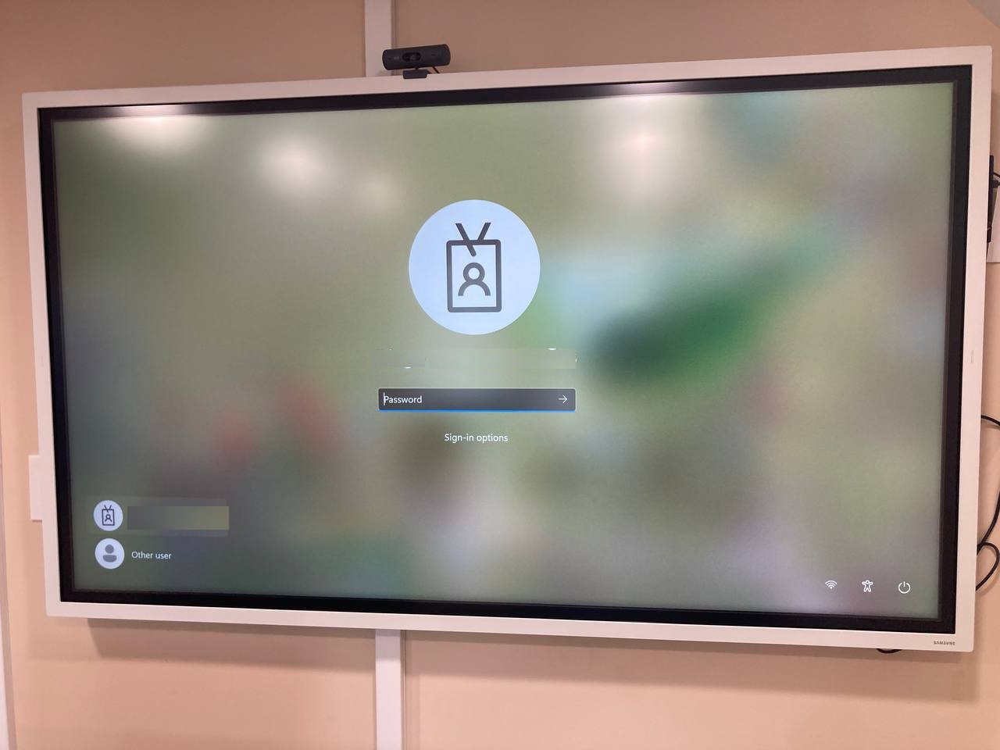

Locate the Shared Space Screen and turn it on
Localice la pantalla del espacio compartido y enciéndala
Step 6 of 7
Paso 6 de 7
Once the computer is powered on and cycles through it's startup, we should see a screen that looks like this:
Una vez que la computadora esté encendida y complete su inicio, deberíamos ver una pantalla que se vea así:
